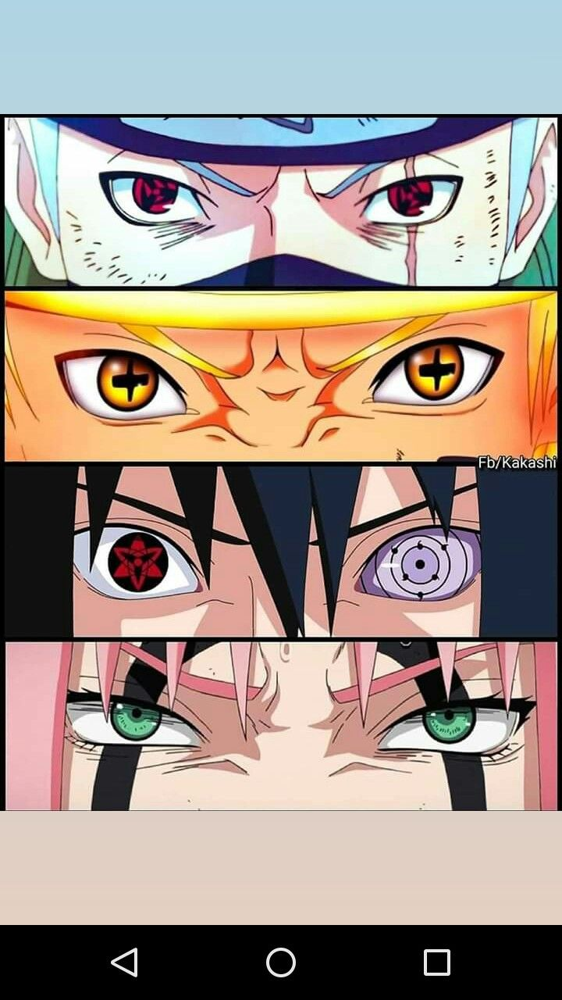
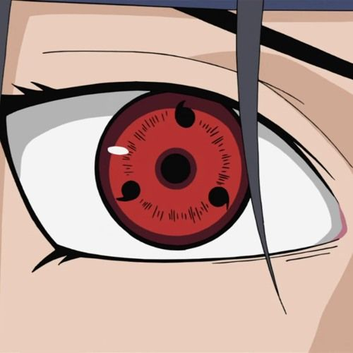
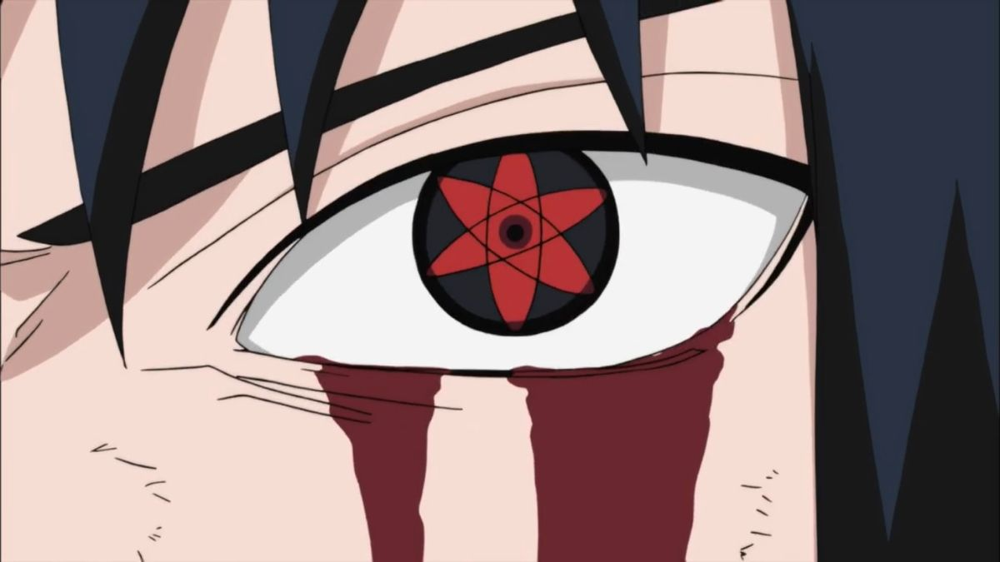
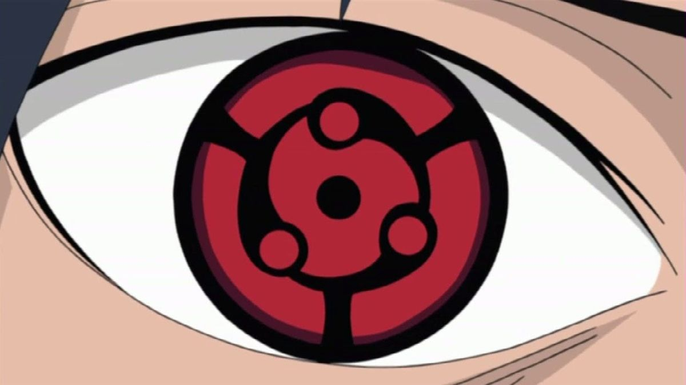
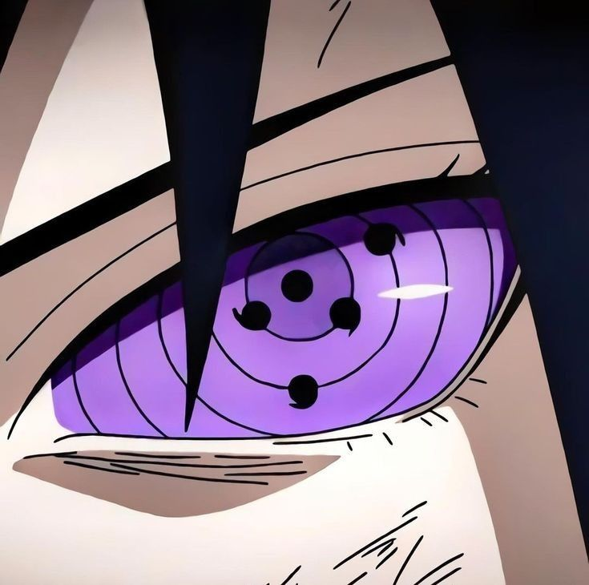
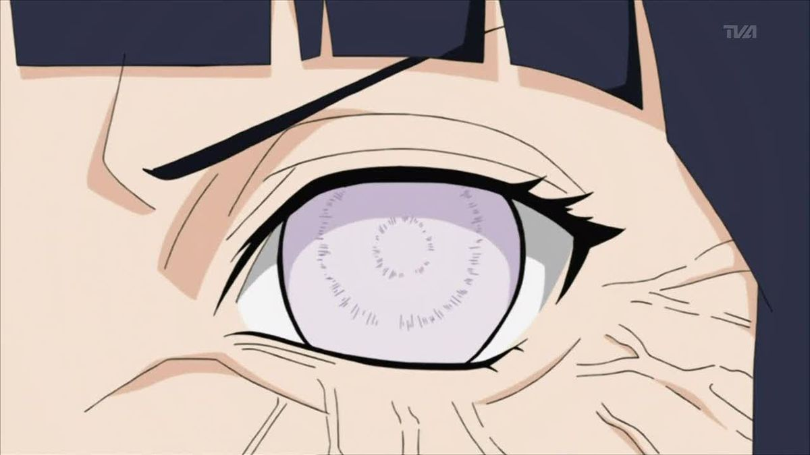
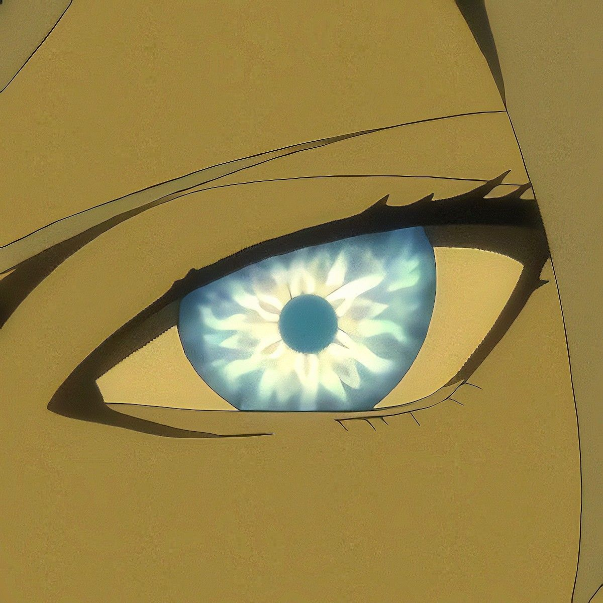
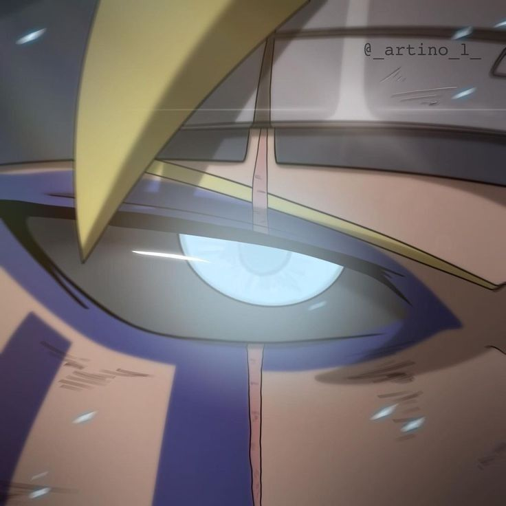

Naruto
Los ojos de Naruto
En Naruto existen poderes oculares especiales llamados dojutsu. Son habilidades unicas que otorgan percepcion sobrehumana, lectura avanzada del chakra y tecnicas extremadamente poderosas. Los tres grandes pilares del sistema ocular son el Sharingan, el Byakugan y el Rinnegan, aunque alrededor de ellos existen evoluciones y variantes todavia mas raras.
Volver a NarutoGuia general
Como funcionan los dojutsu en el mundo shinobi
Los dojutsu son tecnicas oculares heredadas o despertadas bajo condiciones especiales. No solo sirven para ver mejor: permiten copiar movimientos, bloquear tenketsu, percibir dimensiones, invocar poderes gravitatorios o incluso someter a otros a genjutsu devastadores.
En Naruto estos ojos estan conectados con clanes, traumas, linajes y con la herencia del clan Otsutsuki. Por eso no son solo un recurso de combate, sino una forma de contar destino, dolor, talento y corrupcion por el poder.
- Algunos dojutsu nacen por herencia de sangre y otros por evolucion extrema.
- Las versiones mas fuertes suelen tener un coste fisico, mental o emocional.
- Muchos de los mayores conflictos de la serie giran alrededor de estos ojos.
Dojutsu y evoluciones mas importantes

Sharingan
Clan UchihaDe que va: es el ojo caracteristico del clan Uchiha y una de las tecnicas visuales mas iconicas de toda la serie.
Habilidades: ver movimientos rapidisimos, copiar jutsus, detectar genjutsu y predecir ataques.
Evolucion: suele empezar con un tomo y puede desarrollarse hasta tres tomo.
Usuarios famosos: Sasuke Uchiha, Itachi Uchiha, Madara Uchiha y tambien Kakashi como caso excepcional.

Mangekyo Sharingan
Version avanzadaDe que va: es una version superior del Sharingan que despierta tras un trauma emocional extremo.
Poderes famosos: Tsukuyomi, Amaterasu, Kamui y el acceso al Susanoo.
Debilidad: su uso excesivo deteriora la vista y puede dejar ciego al usuario.
Usuarios famosos: Itachi, Sasuke, Obito, Madara y otros Uchiha de elite.

Mangekyo Sharingan Eterno
Version definitivaDe que va: se obtiene tras trasplantar los ojos de otro Uchiha cercano, normalmente un hermano o alguien del mismo linaje.
Ventajas: evita la ceguera progresiva y eleva muchisimo el rendimiento de las habilidades del Mangekyo.
Valor en la serie: es la forma que convierte al usuario en un monstruo de combate mucho mas estable.
Usuarios conocidos: Madara Uchiha y Sasuke Uchiha.

Rinnegan
El ojo legendarioDe que va: esta relacionado con Hagoromo Otsutsuki, el Sabio de los Seis Caminos, y suele considerarse el dojutsu mas poderoso clasico de Naruto.
Poderes: control de gravedad, absorcion de chakra, invocaciones, resurreccion y manipulacion de almas.
Impacto: cambia por completo la escala del combate y acerca al usuario a poderes casi divinos.
Usuarios famosos: Nagato, Madara Uchiha, Obito Uchiha y Sasuke Uchiha.

Byakugan
Clan HyugaDe que va: es el ojo del clan Hyuga y el primer gran dojutsu importante que se muestra con detalle en la serie.
Habilidades: vision casi de 360 grados, capacidad de ver puntos de chakra y vision a grandes distancias.
Combate: se usa de forma perfecta con el Juken o Punyo Suave para cerrar la red de chakra del rival.
Usuarios famosos: Hinata Hyuga, Neji Hyuga, Hiashi Hyuga y varios miembros del clan.

Tenseigan
Relacion OtsutsukiDe que va: es una evolucion asociada al Byakugan y al linaje Otsutsuki, presentada como una forma ocular de escala muy superior.
Poderes: chakra extremadamente poderoso, control gravitatorio y un modo de combate especial parecido a una forma elevada.
Sensacion general: es uno de los ojos mas raros y menos comunes, pero tambien uno de los mas destructivos.
Usuario mas conocido: Toneri Otsutsuki.

Jougan
El ojo de BorutoDe que va: es un ojo misterioso vinculado sobre todo al anime de Boruto y todavia no ha sido explicado por completo.
Habilidades conocidas: detectar dimensiones, percibir chakra anomalo y reaccionar ante amenazas no visibles para otros.
Estado: sigue rodeado de misterio, lo que lo convierte en una de las habilidades mas abiertas a teorias.
Usuario: Boruto Uzumaki.
Los tres grandes y sus ramas
Pilar 1
Sharingan y sus evoluciones
El Sharingan es probablemente el dojutsu mas popular de la serie por su versatilidad y por la importancia del clan Uchiha en la historia. Su evolucion hacia el Mangekyo y el Mangekyo Eterno hace que pase de ser un ojo tactico a una fuente de poderes monstruosos ligados al sufrimiento y a la perdida.
- Empieza como una ventaja de lectura y reaccion.
- Con el Mangekyo aparecen tecnicas unicas segun el usuario.
- El Mangekyo Eterno elimina el peaje mas duro del uso continuado.
Pilar 2
Byakugan y derivados
El Byakugan parece menos espectacular al principio, pero en realidad es una herramienta brutal para leer el campo de batalla y atacar el sistema de chakra del enemigo con precision quirurgica. Su variante mas extrema, el Tenseigan, lleva este linaje visual a una escala mucho mas sobrenatural.
- Controla distancias, angulos ciegos y red de chakra.
- Es esencial para el estilo de combate del clan Hyuga.
- Con el Tenseigan la rama ocular se vuelve casi cosmica.
Pilar 3
Rinnegan como cima del poder clasico
Si el Sharingan representa evolucion y trauma, y el Byakugan precision y lectura del chakra, el Rinnegan simboliza directamente el poder de una figura casi divina. Las tecnicas de los Seis Caminos convierten al usuario en una amenaza de escala masiva capaz de alterar la batalla completa.
- Sus habilidades cubren ataque, defensa, invocacion y control vital.
- Es uno de los ojos mas influyentes en el tramo final de Naruto.
- Su presencia cambia el equilibrio de cualquier guerra.
Ojos mas rotos de la serie
Ranking
Top mas temidos
- Rinnegan. Por variedad absurda de tecnicas y escala casi divina.
- Mangekyo Sharingan. Porque da acceso a hax visuales y al Susanoo.
- Mangekyo Sharingan Eterno. Mantiene ese poder sin el desgaste fatal de la ceguera.
- Tenseigan. Por su conexion con los Otsutsuki y su potencia gravitatoria.
- Byakugan. Menos llamativo, pero letal en manos de un gran usuario del Juken.
Curiosidades y detalles extra
- Kakashi uso un Sharingan sin ser Uchiha, algo rarisimo y muy exigente para su cuerpo.
- Madara llego a tener tanto Sharingan como Rinnegan, convirtiendose en una amenaza casi imparable.
- El Susanoo solo aparece en usuarios avanzados del Mangekyo, y suele ser una de las tecnicas visuales mas impresionantes.
- El Byakugan fue el primer gran dojutsu mostrado a fondo antes de que la serie disparara la escala con los Uchiha.
- Muchos poderes visuales vienen del clan Otsutsuki, que funciona como raiz mitologica de buena parte del sistema ocular.
- El Jougan sigue siendo un misterio, asi que su posicion real entre los grandes ojos todavia no esta cerrada.